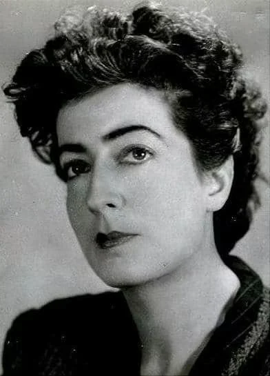

Publication relayée par le PCF 79
L’Assemblée nationale rend hommage à Madeleine Braun
Date de mise à jour indiquée par Facebook · 8 mars 2023
Texte de la publication · Les députés communistes
Une plaque au nom de la députée communiste Madeleine Braun sera apposée ce jour dans l’hémicycle à la place qu’elle occupait. En ce 8 mars, nous nous félicitons de la mise à l’honneur de cette femme hors du commun qui fut la première à présider la séance en 1946 en tant que vice-présidente.
Notre communiqué ⤵️
Communiqué] L’Assemblée nationale rend hommage à la députée communiste Madeleine Braun
En cette journée internationale des droits des femmes, l’Assemblée nationale a choisi de rendre hommage à Madeleine Braun, résistante, députée communiste et première femme élue à la vice-Présidence de l’Assemblée nationale.
Nous nous félicitons de ce choix de mettre à l’honneur une militante et une femme politique d’exception qui s’est illustrée à plusieurs reprises par son courage et par la force de son engagement.
Dès 1940, elle rejoint la résistance en zone sud puis devient l'une des responsables du « Front national ». Elle prend un peu plus tard la direction du journal Patriote. A la libération, son courage lui vaut la médaille de la Résistance, la croix de chevalier de la Légion d'honneur et la croix de guerre avec palme.
Elle est ensuite désignée par son mouvement de résistance comme déléguée à l'Assemblée consultative provisoire en 1944. Au rang de ses combats de députée, la défense d’un statut pour les étrangers, l’égalité entre les femmes et les hommes ou la lutte contre le fascisme, et notamment la défense des Républicains espagnols réfugiés en France, tiennent une part importante.
Le 30 juillet 1946, elle est la première femme de l’histoire à présider la séance. Proclamée vice-présidente de l'Assemblée nationale constituante le 14 juin de la même année, elle occupera cette fonction, à laquelle elle sera nommée à quatre reprises, jusqu’en 1951. A sa mort en 1980, le Monde écrit qu’ « Elle y fit preuve d'autorité. Son élégance, sa courtoisie et sa culture lui permirent d'avoir une influence qui dépassait les limites de son parti, tant à ce poste de vice-président qu'au sein de la commission de la presse, de la radio et du cinéma. »
Nous saluons la mémoire de celle dont l’engagement communiste est né, aux côtés des plus modestes, alors qu’elle gérait le service social d’un hôpital et dont la vie aura été consacrée à combattre les inégalités sociales et le fascisme.

Sources
Les députés communistes · publication relayée par le PCF 79 · bibliothèque Facebook · AR-0002-FB-01736
À lire aussi · 8 mars. Le PCF dénonce les inégalités et les violences faites aux femmes